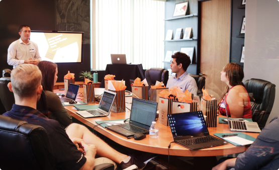

ИТ Услуги:
Абонентское Обслуживание Компьютеров
В стоимость входит:
- Виртуальный сервер;
- Подменная техника;
- Backup и почта
Возможна частичная передача услуг на
IT OUTSOURCING
IT поддержка офисов, удаленных филиалов и сотрудников:
Обслуживаем государственные и коммерческие предприятия, фирмы и
организации Киева.
Поддержка удаленных филиалов, офисов, сотрудников работающих удаленно в
Украине, за ее пределами.

Обслуживание малого и среднего бизнеса: от 5 до 100 сотрудников.
Частичное или Комплексное Абонентское IT обслуживание?

Услуги системных администраторов
- Быстрая, квалифицированная помощь
- Удаленная техподдержка
- Плановые и экстренные выезды

Настройка и обслуживание компьютерной техники
- Подменный фонд на время ремонта
- Диагностика, ремонт, модернизация
- Профилактика и мониторинг
- Подменная техника, склад запчастей
- Приобретение оргтехники

Сети
- Организация переезда, перенос рабочих мест
- Настройка сетевого оборудования
- Монтажные работы
- Настройка оборудования
- Настройка Mikrotik
- Настройка WiFi, бесшовные сети
- Создание и подключение VPN

Корпоративные сервисы
- Администрируем ваши, предоставляем свои
- Аренда серверного оборудования
- Корпоративная почта
- Информационная безопасность
- Резервное копирование, личное облако

Программное обеспечение
- Покупка, лицензирование, переход на бесплатное ПО
- Любые ОС
- Помощь и внедрение
Этапы обслуживания
10 шагов, чтобы навести порядок
1
Заявка и встреча
Связываемся, согласовываем время встречи.
Производим предварительную оценку состояния, обсуждаем условия сотрудничества, выбираем тарифный план,
даем на
утверждение договор.
Экспресс аудит, инвентаризация
Тестирование, инвентаризация. Документируем процессы и сервисы: схема сети,
расположение техники, настройки сетевого
оборудования, используемые программы, доступы к панелям управления сайтами, провайдеры, внешние
контрагенты.
2
3
Работа с пользователями
Выслушаем пожелания, решим проблемы. Поможем упорядочить данные для
последующего переноса.
Оценка состояния
Даем анализ результатов текущего состояния. Предлагаем план действий.
Согласовываем время, бюджет, этапы.
4
5
Оборудование
Ремонт, профилактика, модернизация. Чаще всего — замена жестких дисков (меняем
на SSD), добавление памяти, чистка от
пыли. В случае необходимости замены — помогаем с выбором модели, конфигурации, поставщика. Можем
предложить технику
бизнес-класса из Европы и США.
Резервное копирование
Создаем архивные копии информации на момент начала работ. Выбираем оптимальный
вариант автоматического создания копий.
Сохраняем на собственные облачные ресурсы.
Для пользователей подключаем OneDrive, GoogleDisk, Dropbox, корпоративные NAS.
6
7
Сервер
Нет собственного? Предоставим виртуальный. Упорядочиваем и переносим критически
важную информацию: документы, 1С,
бухгалтерские программы. Производим аудит безопасности, разграничиваем права доступа.
Программное обеспечение
Операционные системы и программы: устанавливаем актуальные обновления,
оптимизируем, при необходимости переустанавливаем
с сохранением данных.
Удаляем неиспользуемые, приводим к единому внутреннему стандарту. Помогаем с переходом на свободно
распространяемое и
лицензионное ПО.
8
9
Безопасность и антивирус
Независимо от наличия или отсутствия антивируса, проверяем минимум двумя
утилитами на наличие вирусов и вредоносного ПО.
Устанавливаем актуальные версии и базы. Обновляем прошивки роутеров, меняем пароли доступа.
Счета, акты, оплата
Передаем пакет документации. Выставляем счет, закрываем акты.
10
Вопрос-ответ
Наиболее частые вопросы
IT Outsourcing - это полная или частичная передача задач по сопровождению и поддержке ИТ инфраструктуры
тем компаниям,
которые занимаются этим профессионально.
Мы также пользуемся услугами Аутсорсинга. Правда бухгалтерского. Содержать собственного бухгалтера
нерентабельно:
необходимо платить зарплату, налоги, организовывать рабочее место. Нашу компанию взяла на аутсорс фирма,
которая
занимается только предоставлением бухгалтерских услуг. В итоге мы платим значительно меньше. Учет ведется,
отчеты
сдаются вовремя, мы не вникаем в изменение законодательной базы.
IT Outsourcing - это полная или частичная передача задач по сопровождению и поддержке ИТ инфраструктуры
тем компаниям,
которые занимаются этим профессионально.
Мы также пользуемся услугами Аутсорсинга. Правда бухгалтерского. Содержать собственного бухгалтера
нерентабельно:
необходимо платить зарплату, налоги, организовывать рабочее место. Нашу компанию взяла на аутсорс фирма,
которая
занимается только предоставлением бухгалтерских услуг. В итоге мы платим значительно меньше. Учет ведется,
отчеты
сдаются вовремя, мы не вникаем в изменение законодательной базы.
IT Outsourcing - это полная или частичная передача задач по сопровождению и поддержке ИТ инфраструктуры
тем компаниям,
которые занимаются этим профессионально.
Мы также пользуемся услугами Аутсорсинга. Правда бухгалтерского. Содержать собственного бухгалтера
нерентабельно:
необходимо платить зарплату, налоги, организовывать рабочее место. Нашу компанию взяла на аутсорс фирма,
которая
занимается только предоставлением бухгалтерских услуг. В итоге мы платим значительно меньше. Учет ведется,
отчеты
сдаются вовремя, мы не вникаем в изменение законодательной базы.
IT Outsourcing - это полная или частичная передача задач по сопровождению и поддержке ИТ инфраструктуры
тем компаниям,
которые занимаются этим профессионально.
Мы также пользуемся услугами Аутсорсинга. Правда бухгалтерского. Содержать собственного бухгалтера
нерентабельно:
необходимо платить зарплату, налоги, организовывать рабочее место. Нашу компанию взяла на аутсорс фирма,
которая
занимается только предоставлением бухгалтерских услуг. В итоге мы платим значительно меньше. Учет ведется,
отчеты
сдаются вовремя, мы не вникаем в изменение законодательной базы.
IT Outsourcing - это полная или частичная передача задач по сопровождению и поддержке ИТ инфраструктуры
тем компаниям,
которые занимаются этим профессионально.
Мы также пользуемся услугами Аутсорсинга. Правда бухгалтерского. Содержать собственного бухгалтера
нерентабельно:
необходимо платить зарплату, налоги, организовывать рабочее место. Нашу компанию взяла на аутсорс фирма,
которая
занимается только предоставлением бухгалтерских услуг. В итоге мы платим значительно меньше. Учет ведется,
отчеты
сдаются вовремя, мы не вникаем в изменение законодательной базы.